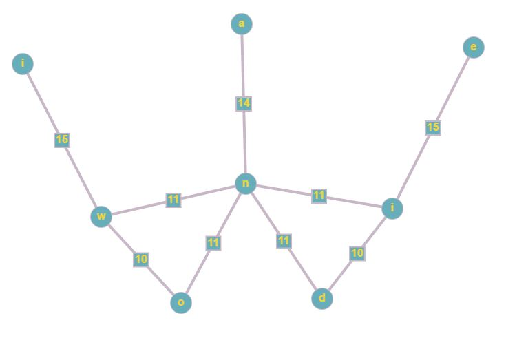

Основы теории графов
src="img.JPG">
Ориентированные и неориентированные графы
Графы, в которых все рёбра являются звеньями (порядок двух концов ребра
графа не существенен), называются неориентированными.
Графы, в которых все рёбра являются дугами (порядок двух концов ребра
графа существенен), называются ориентированными графами или орграфами.
Неориентированный граф может быть представлен в виде ориентированного
графа, если каждое его звено заменить на две дуги, имеющие
противоположные направления.

Деревом называется
связный граф без циклов (рисунок ниже). Любые две вершины дерева
соединены лишь одним маршрутом.
В теории графов изоморфизмом графов и называется биекция между
множествами вершин графов такая, что любые две вершины и графа смежны
тогда и только тогда, когда вершины и смежны в графе. Здесь графы
понимаются неориентированными и не имеющими весов вершин и ребер.
Эйлеров
путь в графе это путь, проходящий по всем рёбрам графа и
притом
только по одному разу. Эйлеров цикл эйлеров путь,
являющийся
циклом, то есть замкнутый путь, проходящий через каждое ребро графа
ровно по одному разу. Эйлеров граф граф, содержащий эйлеров
цикл.
Эйлеров путь (эйлерова цепь) в графе — это путь, проходящий
по всем рёбрам графа и притом только по одному разу. (ср. Гамильтонов
путь)
Эйлеров цикл — эйлеров путь, являющийся циклом, то есть
замкнутый путь, проходящий через каждое ребро графа ровно по одному
разу.
Эйлеров граф — граф, содержащий эйлеров цикл.
Гамильто́нов граф математический объект теории графов.
Представляет собой граф, который содержит гамильтонов цикл. При этом
гамильтоновым циклом
является такой цикл, который проходит через каждую вершину данного
графа ровно по одному разу
style="color: rgb(34, 34, 34);
Рассмотрим работу алгоритма на примере графа, показанного на рисунке.
Пусть требуется найти расстояния от 1-й вершины до всех остальных.
Рассмотрим шаг алгоритма Дейкстры для нашего примера. Минимальную метку
имеет вершина 1. Ее соседями являются вершины 2, 3 и 6.
Первый по очереди сосед вершины 1 — вершина 2, потому что
длина пути до нее минимальна. Длина пути в нее через вершину 1 равна
кратчайшему расстоянию до вершины 1 + длина ребра, идущего из 1 в 2, то
есть 0 + 7 = 7. Это меньше текущей метки вершины 2, поэтому новая метка
2-й вершины равна 7.
Аналогичную операцию проделываем с двумя другими соседями 1-й вершины
— 3-й и 6-й.
Все соседи вершины 1 проверены. Текущее минимальное расстояние до
вершины 1 считается окончательным и пересмотру не подлежит (то, что это
действительно так, впервые доказал Дейкстра). Вычеркнем её из графа,
чтобы отметить, что эта вершина посещена
Шаг алгоритма повторяется. Снова находим
«ближайшую» из непосещенных вершин. Это вершина 2 с
меткой 7 Снова пытаемся уменьшить метки соседей выбранной вершины,
пытаясь пройти в них через 2-ю. Соседями вершины 2 являются 1, 3,
4.Первый (по порядку) сосед вершины 2 — вершина 1. Но она уже
посещена, поэтому с 1-й вершиной ничего не делаем.Следующий сосед
вершины 2 — вершины 4 и 3. Если идти в неё через 2-ю, то
длина такого пути будет = кратчайшее расстояние до 2 + расстояние между
вершинами 2 и 4 = 7 + 15 = 22. Поскольку 22<∞,
устанавливаем метку вершины 4 равной 22.
Ещё один сосед вершины 2 — вершина 3. Если идти в неё через
2, то длина такого пути будет = 7 + 10 = 17. Но текущая метка третьей
вершины равна 9<17, поэтому метка не меняется Все соседи вершины
2 просмотрены, замораживаем расстояние до неё и помечаем ее как
посещенную. Повторяем шаг алгоритма, выбрав вершину 3 Повторяем шаг
алгоритма для оставшихся вершин (Это будут по порядку 6, 4 и 5).
Алгоритм заканчивает работу, когда вычеркнуты все вершины. Результат
его работы: кратчайший путь от вершины 1 до 2-й составляет 7, до 3-й
— 9, до 4-й — 20, до 5-й — 20, до 6-й
— 11.
Поскольку алгоритм Дейкстры всякий раз выбирает для обработки вершины с
наименьшей оценкой кратчайшего пути, можно сказать, что он относится к
жадным алгоритмам.